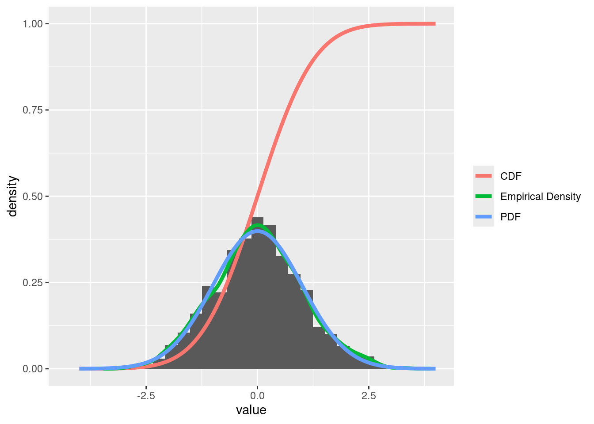

samples <- rnorm(1000, mean, sd)Exploring Probability Distributions in R
Introduction
This document provides an overview of the d-, p-, q-, and r- functions in R, focusing on their roles in understanding probability distributions.
Theoretical Background
The d- Function (Density)
The d- functions, such as dnorm(), calculate the density (or probability mass) at a given point. For continuous distributions, this represents the height of the probability density function (PDF) at a specific value. Use it to understand the likelihood of observing a specific value under a given distribution. For example, dnorm(0, mean = 0, sd = 1) returns the density at x = 0. It helps assess how probable a particular outcome is.
The p- Function (Cumulative Distribution)
The p- functions, like pnorm(), return the cumulative probability up to a given point. This is known as the cumulative distribution function (CDF), which tells us the probability of a random variable being less than or equal to a specific value. Function (Cumulative Probability): calculates the cumulative probability up to a specific point, indicating the probability of a value being less than or equal to that point. For instance, pnorm(1, mean = 0, sd = 1) gives the probability P(X≤1). It’s useful for finding thresholds or quantifying areas under the curve.
The q- Function (Quantile)
The q- functions, such as qnorm(), provide the inverse of the CDF. Given a probability, q- functions return the quantile that corresponds to that probability. q- Function (Quantile): calculates the value corresponding to a given cumulative probability. Use it when you need the value for a specified percentile. For example, qnorm(0.975, mean = 0, sd = 1) returns the 97.5th percentile of the standard normal distribution, useful in setting confidence intervals.
The r- Function (Random Generation)
The r- functions, like rnorm(), are used for generating random samples from a specified distribution. This is essential for simulations and statistical analysis.
Visualizing a Standard Normal Distribution
Let’s create a histogram of random samples drawn from a standard normal distribution and overlay it with the PDF, CDF, and empirical density.
Generating Random Samples
Plotting the Histogram with Overlays
library(ggplot2)
x <- seq(-4, 4, length.out = 100)
df <- data.frame(x = x, value = samples, group = "Measured")
# Sequence for plotting PDF and CDF and empirical density
densi_emp <- density(samples)
# Normalize the measured points
hist_data <- hist(samples, breaks = 30, plot = FALSE)
N <- length(samples)
n_counts_in_bins <- hist_data$counts
bin_widths <- hist_data$breaks[2] - hist_data$breaks[1]
densi <- n_counts_in_bins / (bin_widths * N)
df <- rbind(df,
data.frame(x = x, value = dnorm(x, mean, sd), group = "PDF"),
data.frame(x = x, value = pnorm(x, mean, sd), group = "CDF"),
data.frame(x = densi_emp$x, value = densi_emp$y, group = "Empirical Density")
)
ggplot() +
geom_histogram(
data = df[df$group == "Measured", ],
aes(x = value, y = ..density..)
# This normalizes the histogram: n/(binwidth*N) = density;
# Where N is the total number of observations and
# n is the number of observations in each bin.
# See above for more details
) +
geom_line(
data = df[df$group != "Measured", ],
aes(x = x, y = value, color = group),
size = 1.5
) +
theme(legend.title = element_blank())Warning: Using `size` aesthetic for lines was deprecated in ggplot2 3.4.0.
ℹ Please use `linewidth` instead.Warning: The dot-dot notation (`..density..`) was deprecated in ggplot2 3.4.0.
ℹ Please use `after_stat(density)` instead.`stat_bin()` using `bins = 30`. Pick better value with `binwidth`.
Likelihood of a Dataset
Likelihood refers to how probable a specific set of data is under a given model. It quantifies the model’s ability to explain the observed data. Maximizing the likelihood helps estimate the parameters that make the observed data most probable (used in maximum likelihood estimation).
fitdistr and AIC
- fitdistr (in MASS package): Fits a distribution to data by estimating its parameters using maximum likelihood estimation. It’s useful for modeling and checking which distribution best matches your data.
- AIC (Akaike Information Criterion): Measures the relative quality of statistical models, balancing model fit and complexity. A lower AIC indicates a model that better explains the data with fewer parameters.
library(FAwR)Loading required package: MASSLoading required package: latticeLoading required package: glpkAPIusing GLPK version 5.0library(MASS)
data(gutten)
hist(gutten$dbh.cm)
fit_norm <- fitdistr(gutten$dbh.cm, "normal")
fit_norm mean sd
20.7820833 10.5987949
( 0.3059609) ( 0.2163470)likelihood <- prod(
dnorm(gutten$dbh.cm,
mean = fit_norm$estimate[1],
sd = fit_norm$estimate[2])
) # Cannot be calculated like this by a computer --> is 0
likelihood <- sum(
log(
dnorm(gutten$dbh.cm,
mean = fit_norm$estimate[1],
sd = fit_norm$estimate[2])
)
)
likelihood[1] -4535.615logLik(fit_norm)'log Lik.' -4535.615 (df=2)AIC(fit_norm)[1] 9075.229BIC(fit_norm)[1] 9085.409# log normal
fit_lognorm <- fitdistr(gutten$dbh.cm, "lognormal")
fit_lognorm meanlog sdlog
2.82767051 0.77740010
(0.02244161) (0.01586861)likelihood <- sum(
log(
dnorm(gutten$dbh.cm,
mean = fit_lognorm$estimate[1],
sd = fit_lognorm$estimate[2])
)
)
likelihood[1] -InflogLik(fit_lognorm)'log Lik.' -4793.771 (df=2)AIC(fit_lognorm)[1] 9591.541BIC(fit_lognorm)[1] 9601.722Regression i.e. generalized linear models
A regression describes the quantitative relationship between one or more predictor variables and a response variable. Here a distribution is again fitted to the measured data. However, a predictor effects certain parameters of the distribution. For example, we have three factors in our dataset: genotype, time and treatment. Moreover, we want to predict the CO2 uptake rate (our response variable). Furthermore, we assume normally distributed values. CO2uptake ~ N(µ = a + bgenotype + ctime + d*treatment, σ)
The link function/scala
Often distributions have only a certain interval in which they are defined. However, if a predictor takes values which are outside of the interval,. we need to transform the predictor to a new scale. This is the task of the link function.
| distributions | link_functions |
|---|---|
| Normal | Identity |
| Poisson | Log |
| Binomial | Logit (ln(y / (1 - y)) |
| Gamma | Inverse |
| Negative Binomial | Log |
df <- data.frame(sizes = c(rnorm(10000, mean = 170, sd = 5), rnorm(10000, mean = 182, sd = 5)),
sex = rep(c("F", "M"), each = 10000))
p1 <- ggplot(df, aes(x = sizes, colour = sex)) +
geom_histogram()
p2 <- ggplot(df, aes(y = sizes, x = sex)) +
geom_boxplot()
library(patchwork)
Attaching package: 'patchwork'The following object is masked from 'package:MASS':
areap1 + p2`stat_bin()` using `bins = 30`. Pick better value with `binwidth`.
m <- glm(sizes ~ 1, data = df, family = "gaussian")
cat(
"Base model: Fit the distribution to the data\n",
"y = N(µ, σ)\n"
)Base model: Fit the distribution to the data
y = N(µ, σ)summary(m)
Call:
glm(formula = sizes ~ 1, family = "gaussian", data = df)
Coefficients:
Estimate Std. Error t value Pr(>|t|)
(Intercept) 175.96251 0.05508 3195 <2e-16 ***
---
Signif. codes: 0 '***' 0.001 '**' 0.01 '*' 0.05 '.' 0.1 ' ' 1
(Dispersion parameter for gaussian family taken to be 60.67933)
Null deviance: 1213526 on 19999 degrees of freedom
Residual deviance: 1213526 on 19999 degrees of freedom
AIC: 138873
Number of Fisher Scoring iterations: 2cat(
"Model: which considers the sex\n",
"y = N(µ = a*F + b*M, σ)\n"
)Model: which considers the sex
y = N(µ = a*F + b*M, σ)m <- glm(sizes ~ sex, data = df, family = "gaussian")
summary(m)
Call:
glm(formula = sizes ~ sex, family = "gaussian", data = df)
Coefficients:
Estimate Std. Error t value Pr(>|t|)
(Intercept) 169.99313 0.05005 3396.8 <2e-16 ***
sexM 11.93876 0.07077 168.7 <2e-16 ***
---
Signif. codes: 0 '***' 0.001 '**' 0.01 '*' 0.05 '.' 0.1 ' ' 1
(Dispersion parameter for gaussian family taken to be 25.04528)
Null deviance: 1213526 on 19999 degrees of freedom
Residual deviance: 500856 on 19998 degrees of freedom
AIC: 121175
Number of Fisher Scoring iterations: 2# By hand
# Fit a normal distribution to the data without considering the sex
fit_base <- fitdistr(df$sizes, "normal")
mean_base <- fit_base$estimate[1]
sd_base <- fit_base$estimate[2]
# Calculate log-likelihood for the base model
log_likelihood_base <- sum(log(dnorm(df$sizes, mean = mean_base, sd = sd_base)))
log_likelihood_base[1] -69434.3# Fit separate distributions for each group
fit_female <- fitdistr(df$sizes[df$sex == "F"], "normal")
mean_female <- fit_female$estimate[1]
sd_female <- fit_female$estimate[2]
fit_male <- fitdistr(df$sizes[df$sex == "M"], "normal")
mean_male <- fit_male$estimate[1]
sd_male <- fit_male$estimate[2]
# Calculate log-likelihood for the model considering sex
log_likelihood_female <- sum(log(dnorm(df$sizes[df$sex == "F"], mean = mean_female, sd = sd_female)))
log_likelihood_male <- sum(log(dnorm(df$sizes[df$sex == "M"], mean = mean_male, sd = sd_male)))
log_likelihood_total <- log_likelihood_female + log_likelihood_male
log_likelihood_total[1] -60584.61cat("Log-likelihood of the base model:", log_likelihood_base, "\n")Log-likelihood of the base model: -69434.3 cat("Log-likelihood of the model considering sex:", log_likelihood_total, "\n")Log-likelihood of the model considering sex: -60584.61 Constructing a Regression Model by Hand
1. Formulate the Regression Equation
Suppose you’re constructing a simple linear regression model for a response variable \(Y\) with a single predictor \(X\). The model would be: \[ Y_i = \beta_0 + \beta_1 X_i + \epsilon_i \] where: - \(\beta_0\) is the intercept, - \(\beta_1\) is the slope coefficient, - \(\epsilon_i\) is the error term assumed to be normally distributed with mean 0 and variance \(\sigma^2\).
2. Set Up the Design Matrix
For a model with \(n\) observations: - Create a matrix \(X\) for the predictors, which includes a column of 1s for the intercept: \[ X = \begin{bmatrix} 1 & X_1 \\ 1 & X_2 \\ \vdots & \vdots \\ 1 & X_n \\ \end{bmatrix} \]
3. Estimate the Coefficients
The least squares estimates \(\hat{\beta}\) can be found using: \[ \hat{\beta} = (X^T X)^{-1} X^T Y \]
By Hand Example
Calculate \(X^T X\): \[ X^T X = \begin{bmatrix} n & \sum X_i \\ \sum X_i & \sum X_i^2 \\ \end{bmatrix} \]
Calculate \(X^T Y\): \[ X^T Y = \begin{bmatrix} \sum Y_i \\ \sum X_i Y_i \\ \end{bmatrix} \]
Find \((X^T X)^{-1}\): \[ (X^T X)^{-1} = \frac{1}{n \sum X_i^2 - (\sum X_i)^2} \begin{bmatrix} \sum X_i^2 & -\sum X_i \\ -\sum X_i & n \\ \end{bmatrix} \]
Compute \(\hat{\beta}\): \[ \hat{\beta} = (X^T X)^{-1} X^T Y \]
4. Compute Residuals
Calculate residuals \(\hat{\epsilon}_i = Y_i - \hat{Y}_i\), where \(\hat{Y}_i\) is obtained using the fitted model: \[ \hat{Y}_i = \hat{\beta}_0 + \hat{\beta}_1 X_i \]
5. Estimate Variance \(\sigma^2\)
The estimate of the variance \(\sigma^2\) is: \[ \hat{\sigma}^2 = \frac{\sum \hat{\epsilon}_i^2}{n - p} \] where \(p\) is the number of estimated parameters (e.g., \(p = 2\) for intercept and slope).
design_matrix <- model.matrix(sizes ~ sex, data = df)
head(design_matrix) (Intercept) sexM
1 1 0
2 1 0
3 1 0
4 1 0
5 1 0
6 1 0tail(design_matrix) (Intercept) sexM
19995 1 1
19996 1 1
19997 1 1
19998 1 1
19999 1 1
20000 1 1beta_hat <- solve(t(design_matrix) %*% design_matrix) %*% t(design_matrix) %*% df$sizes
beta_hat [,1]
(Intercept) 169.99313
sexM 11.93876cat(
"Model: which considers the sex\n",
"y = N(µ = a*F + b*M, σ)\n"
)Model: which considers the sex
y = N(µ = a*F + b*M, σ)m <- glm(sizes ~ sex, data = df, family = "gaussian")
summary(m)
Call:
glm(formula = sizes ~ sex, family = "gaussian", data = df)
Coefficients:
Estimate Std. Error t value Pr(>|t|)
(Intercept) 169.99313 0.05005 3396.8 <2e-16 ***
sexM 11.93876 0.07077 168.7 <2e-16 ***
---
Signif. codes: 0 '***' 0.001 '**' 0.01 '*' 0.05 '.' 0.1 ' ' 1
(Dispersion parameter for gaussian family taken to be 25.04528)
Null deviance: 1213526 on 19999 degrees of freedom
Residual deviance: 500856 on 19998 degrees of freedom
AIC: 121175
Number of Fisher Scoring iterations: 2sum(residuals(m)^2) / (nrow(df) - 2)[1] 25.04528# Calc residuals
# NOTE: Is beta_hat[1] + beta_hat[2] * df$sizes but in addition sex is considered
y_hat <- design_matrix %*% beta_hat
residuals <- df$sizes - y_hat
variance <- sum(residuals^2) / (nrow(df) - 2)
variance[1] 25.04528